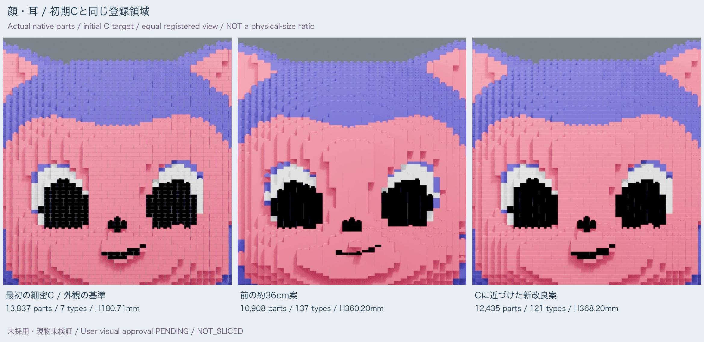
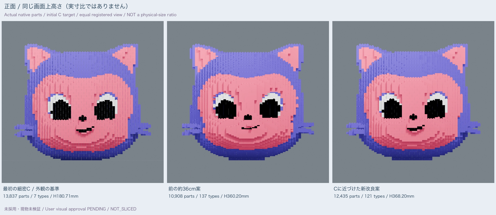
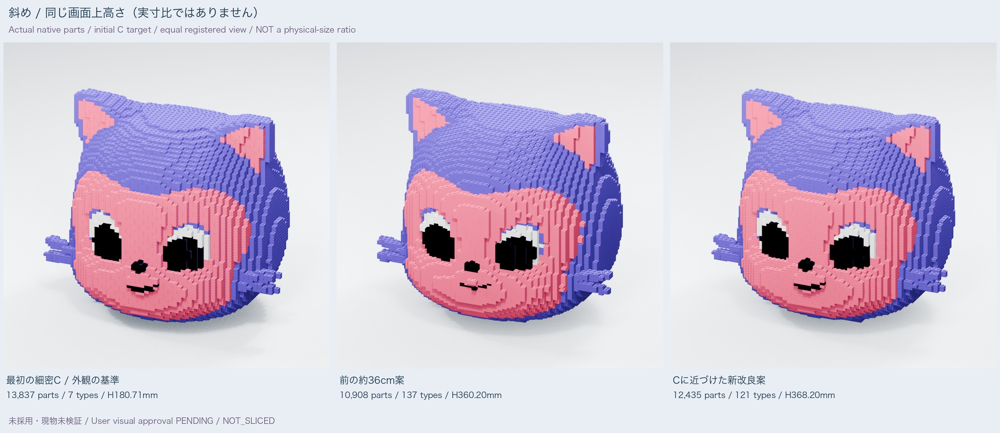
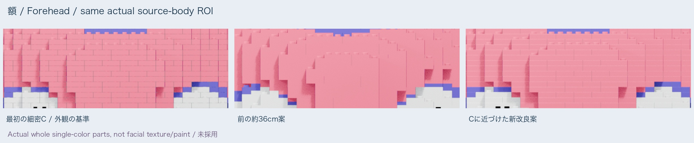
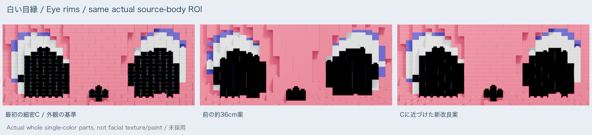
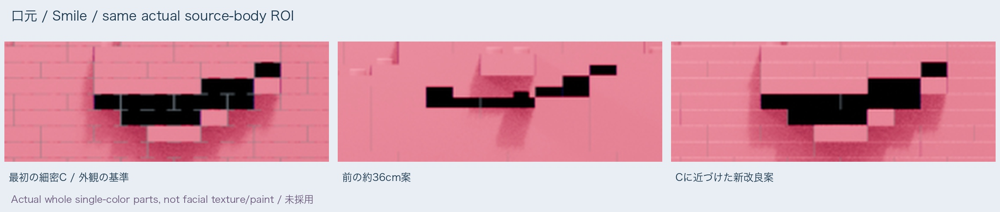

Mona：最初の細密Cへ、もう一段近づける
NOT_SELECTED / visual approval PENDING / physical UNKNOWN / NOT_SLICED / ON_HOLD
今回の外観の目標は初期Cです。元の原型へのIoUとは別に、Monaだけを比較します。
Actual metrics / camera records · CSV · English
同じ登録領域で顔を比較

| 対象 | 実部品 | 前案との差 | 型数 | 実高さ | 1×1 |
|---|
| 最初の細密C / 外観の基準 | 13,837 | +2,929 | 7 | 180.71mm | 1766 |
| 前の約36cm案 | 10,908 | +0 | 137 | 360.20mm | 32 |
| Cに近づけた新改良案 | 12,435 | +1,527 | 121 | 368.20mm | 31 |
画面上の高さを揃えた比較（実寸比ではありません）


額・目の白い縁・口元



今回の変更
- 初期Cの実セル位置・色境界を8mmXY/4.8mmZへ写し、額/頬の段差、白い目縁、口、耳・ひげのパターンを優先しました。原型へのIoU最適化とは別です。
- 大きい面を再サンプルしてまとめ直すのではなく、Cの実部品分割から把持・支持に必要な変更だけを加えました。顔の模様はすべて単色の実部品です。
- 4.8mmは新しい半高ファミリー（屋根1.6mm・下面空間3.2mm）。8mmピッチ/直径4.8mm・高さ1.8mmスタッド/開いた下面の接合は固定です。
- 露出スタッドの高さは、前案の表面段間隔に対して約56%でした。新案では約38%となり、初期Cの約35%に近づきます。色だけでなく額や口元の段差の見え方も比較します。
- 実12,435部品、前案から+1,527。初期Cとの差は-1,402で、個数の多さ自体を美観の合格にしません。
- 実native小片で目地差を確認し、外側の3,763部品だけに上外周0.20mmの面取りを追加。内部の半高8,596部品の座面は無変更です。部品数は増やさず、実形状の型を区別します。
1.6mmは高さを整数管理する単位で、薄い印刷部品やFDM層高ではありません。実本体高さは各行のfamily実数をご覧ください。
初期Cとの比較を補う数値
| 指標 | 前案 | 改良案 |
|---|
| 初期Cとの正面投影輪郭IoU | 0.95061 | 0.98104 |
| 目領域の白い色面IoU | 0.58189 | 0.95925 |
| 口領域の黒い色面IoU | 0.41293 | 0.97838 |
| 額の描画面の平均奥行差（体高比） | 0.01129 | 0.00082 |
数値は同じ領域に登録した実形状の描画比較です。『何%似ている』という美観点数でも、現物の寸法精度/強度でもありません。
残る違いとトレードオフ
- Cを単純に2倍にした弱い旧ピンではありません。そのためCの2倍相当よりスタッド径が大きく、0.2mmの横隙間・上下の座面接触・屋根露出も異なります。
- 初期Cの体高360mmに基礎6.4mmとスタッドを加え、実高さは368.2mm（前案より+8.0mm）。同画面高さの比較は実寸比ではありません。
- 1×1例外は31個。長い把持延長なしの位置/IDを公開し、扱いやすさは未試験です。各最小寸法は別部品由来の場合があります。
- 仮支持台2個は本体個数から除外。実保持力・全体荷重/転倒を確認するまで撤去しません。
- 本人による前案の方向性への肯定は、この新案の最終採用や現物印刷の承認ではありません。形状比較だけで、全プレート/スライス/G-code/新trialは作っていません。
- 原型への投影IoUと初期Cへの近さは別指標です。初期Cを優先した結果、原型へのIoUが下がる場合も隠さず別に記録します。
- 面取りはCの空いた上下目地と同一ではなく、細い明るい縁も出ます。中空部上の屋根は1.6mm、外周帯の中空高さ基準からの残り高さは1.4mmです。一部の座面面積は減るため、形が閉じていることを強度・保持力の合格に読み替えません。